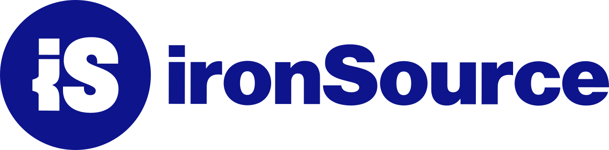

Deeb Andrawis
Senior Automation Developer · Test Automation & CI/CD Infrastructure · Python · Java · Selenium · Cypress
I build automation and CI/CD infrastructure for systems where a missed defect is expensive — from ad-tech platforms to mission-critical hardware.
15+ years of automation engineering
For over fifteen years I've been building automation infrastructure for teams that can't afford to miss a defect — from ad-tech platforms processing massive traffic, to enterprise data-privacy software, to mission-critical drone detection and mitigation systems.
I started out writing Selenium and TestNG suites as a QA automation developer, and grew into leading automation teams and owning CI/CD infrastructure end-to-end. Along the way I've built frameworks from scratch in Java, Python and JavaScript, migrated teams onto cleaner architectures like the Page Object Model, and used Elasticsearch and Kibana to turn mountains of system logs into real answers.
These days I split my time between deep system-and-integration validation, backend and API testing, and designing the automation and CI/CD pipelines that let a team ship a release with confidence instead of crossed fingers.
Languages I speak
ClearMD — Doctor Discovery & Reputation Platform
A full-stack doctor-discovery and review platform for the Israeli market. Patients search by specialty, city, insurance and treatment, read verified reviews, ask doctors questions and request appointments — no account required. Doctors get a subscription portal to manage their profile, respond to reviews, track analytics and receive leads via WhatsApp/email. I built the entire product solo: product decisions, database schema, backend APIs, frontend, SEO architecture, billing integration and infrastructure.
AI semantic search
Multilingual "symptom" search using Gemini embeddings and pgvector cosine similarity, with a hard geographic post-filter.
Webhook billing state machine
Doctor accounts only provision after PayPal confirms an active subscription, with idempotent handling for redelivered webhooks.
Content-translation pipeline
User-generated bios, reviews and Q&A translated across Hebrew, English, Arabic and Russian.
Anonymous-first UX
Reviews, questions and appointment requests are token/rate-limit-gated instead of auth-gated, with admin moderation as the trust layer.
Automation AI
Open any role to see what I did there.
- Executed full-flow validation for mission-critical drone detection and mitigation systems, covering the entire lifecycle from identification to automated mitigation actions.
- Used Elasticsearch and Kibana to analyze high-volume system logs, enabling deep investigation into drone trajectory, identification accuracy, and mitigation success.
- Built automation to validate backend services and communication layers between control software and SDR-based hardware modules.
- Investigated system-level issues by correlating API behavior with system-wide event logs to keep the software-hardware link reliable.
- Validated real-time monitoring dashboards and operational workflows for end-users in field environments.
- Led the MSC2 automation project — designed scalable frameworks and CI/CD pipelines that cut manual intervention and accelerated release cycles.
- Built end-to-end test infrastructure with Cypress and JavaScript for a team of 15+ QA developers.
- Integrated Allure with Cypress to enhance test reporting and visibility.
- Migrated the entire test suite onto the Page Object Model design pattern.
- Implemented parallel test execution to speed up the pipeline.
- Maintained and continuously improved the automation infrastructure.
- Owned Jenkins pipelines and Groovy scripts for CI/CD, and set up the test environment with Docker and Kubernetes.

- Developed and implemented automation tests using Java frameworks — Selenium, TestNG and Gradle.
- Refactored the full regression and sanity suites, rebuilding the infrastructure to cut test run time.
- Led QA automation development and execution at Shield34.
- Built a UI automation framework from scratch in Java with Selenium and TestNG, integrated with TeamCity.
- Built a second UI automation framework from scratch in Python.
- Developed database tests against PostgreSQL.
- Developed and implemented automation tests using Java frameworks — Selenium and TestNG.
- Worked directly within an Agile R&D team alongside QA, frontend and backend developers under a fast-paced Agile timeline.
- Built an object-oriented test architecture and maintained continuous integration using TeamCity.
- Designed and implemented video-recording capabilities; developed automated tests for SEO ranking, REST API sanity and full regression.
- Built an automation history database with Elasticsearch and visualized it with Kibana.
The full history is in the CV (PDF).
Background
B.Sc. Computer Science
University of Haifa
High School — Physics & Computer Science majors
Salvatorian Sisters School, Nazareth · Physics (5 units), Computer Science (5 units)
Excellence and Leadership Program (ExcelHT)
Technion, with JDC Israel and the "It Works" Association — management & leadership, business English, soft skills development.
What I work with
A stack built up over 15 years — from Java and Selenium to Python, Cypress and Kubernetes.
Languages
Automation & Testing
Data & Observability
Infrastructure & CI/CD
Selected work
More of the mission-critical validation work and infrastructure I've designed and owned. See ClearMD above for my flagship personal project.
MSC2 Automation Framework
Led the automation project behind D-Fend's drone detection & mitigation platform — scalable test frameworks and CI/CD pipelines covering system, integration and API-level validation.
- Full-flow validation from detection to mitigation
- Elasticsearch/Kibana-driven log analysis
- Reduced manual intervention, faster release cycles
Cypress E2E Test Infrastructure
Built and led the end-to-end test infrastructure for BigID's platform, supporting a team of 15+ QA developers.
- Cypress + JavaScript, Allure reporting
- Page Object Model migration
- Parallelized execution, Docker/K8s environments
This portfolio
The site you're looking at right now — built and deployed with GitHub Pages.
What I've written
Notes on test automation, written while leading QA automation at Shield34.
Reduce Selenium Flaky Tests — What You Should Know
2 min readConcrete tips for cutting down flaky Selenium tests: explicit waits, a locator priority order, dedicated automation locators, and sizing your environment and thread count to your suite.
How to Reduce Flaky Tests
3 min readA deeper playbook on flakiness: independent tests, re-running only failed cases, and a TestNG retry mechanism built on IRetryAnalyzer and IAnnotationTransformer.
How to Minimize Automated Test Maintenance
2 min readThe structural habits that keep a Selenium suite cheap to maintain: Page Object Model, component wrappers, a locator strategy, and writing generic, reusable test code.
Let's connect
Always glad to talk automation, testing infrastructure, or a new opportunity. I usually reply within a day.
-
Emaildeeb.andrawis@gmail.com
-
Phone052-812-1057
-
GitHub
-
LinkedIn